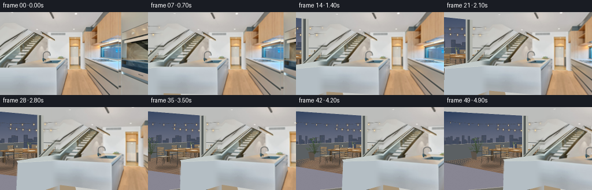
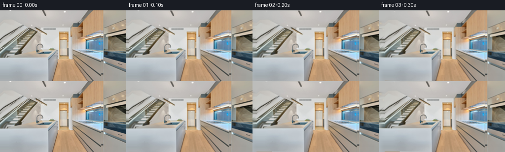

候选 01 · 2026-11-08T18:15:23.521851+00:00 · 点开播放与检查图
inspection.png

transition_check.png

代码变化
--- 上一保存版本
+++ 本次保存版本
@@ -0,0 +1,259 @@
+from pathlib import Path
+import math
+import numpy as np
+from PIL import Image, ImageDraw, ImageFilter
+import cv2
+import artifact_io
+
+ROOT = Path(__file__).resolve().parent
+SRC = np.array(Image.open(ROOT / 'first_frame.png').convert('RGB'))
+# A fixed extended architectural scene, built using mathematical geometry and
+# textures from the input. No animated lights or objects: only camera yaw changes.
+S = 3
+XL, YT, CW, CH = -650, -180, 906, 504
+F = 260.0
+CX, CY = 128., 52.
+rng = np.random.default_rng(810)
+
+def pos(p): return ((p[0]-XL)*S, (p[1]-YT)*S)
+def project(p):
+ x,y,z=p
+ return (CX+F*x/z, CY+F*(1.62-y)/z)
+
+def build_scene():
+ yy,xx=np.mgrid[YT:YT+CH:1/S, XL:XL+CW:1/S]
+ # Base room continuation, with a soft, unchanged daylight exposure.
+ n=rng.normal(0,.48,xx.shape)
+ a=np.zeros((*xx.shape,3),np.float32)
+ for c,val in enumerate((193,194,190)):
+ a[:,:,c]=val+np.clip((yy-20)*.10,-12,14)+n
+ im=Image.fromarray(np.uint8(np.clip(a,0,255)))
+ dr=ImageDraw.Draw(im)
+ def poly(points, fill, outline=None, width=1):
+ dr.polygon([pos(p) for p in points], fill=fill)
+ if outline:
+ dr.line([pos(p) for p in points+[points[0]]],fill=outline,width=max(1,int(S*width)),joint='curve')
+ def line(points, fill, width=1):
+ dr.line([pos(p) for p in points],fill=fill,width=max(1,int(S*width)),joint='curve')
+ def ell(x,y,rx,ry,fill):
+ dr.ellipse([pos((x-rx,y-ry)),pos((x+rx,y+ry))],fill=fill)
+ def polygon3(points, col, outline=None, width=.3):
+ poly([project(p) for p in points],col,outline,width)
+ def line3(points,col,width=1): line([project(p) for p in points],col,width)
+ def tex_poly(points, tex, tint=(1,1,1)):
+ nonlocal im, dr
+ # Homography places a source texture on a static planar surface.
+ q=np.float32([pos(p) for p in points])
+ x0=max(0,int(np.floor(q[:,0].min()))-1);y0=max(0,int(np.floor(q[:,1].min()))-1)
+ x1=min(CW*S,int(np.ceil(q[:,0].max()))+2);y1=min(CH*S,int(np.ceil(q[:,1].max()))+2)
+ if x1<=x0 or y1<=y0:return
+ t=np.uint8(np.clip(np.asarray(tex,dtype=float)*np.array(tint),0,255))
+ h,w=t.shape[:2]
+ mat=cv2.getPerspectiveTransform(np.float32([[0,0],[w-1,0],[w-1,h-1],[0,h-1]]),np.float32(q-[x0,y0]))
+ warped=cv2.warpPerspective(t,mat,(x1-x0,y1-y0),flags=cv2.INTER_LINEAR,borderMode=cv2.BORDER_REFLECT)
+ mask=Image.new('L',(x1-x0,y1-y0));ImageDraw.Draw(mask).polygon([tuple(p) for p in q-[x0,y0]],fill=255)
+ im.paste(Image.fromarray(warped),(x0,y0),mask); dr=ImageDraw.Draw(im)
+ def tex3(points,tex,tint=(1,1,1)): tex_poly([project(p) for p in points],tex,tint)
+ # Interior floor and ceiling outside the original crop.
+ poly([(XL,105),(15,94),(90,CH+YT),(XL,CH+YT)],(167,148,120))
+ poly([(XL,YT),(80,YT),(36,26),(-45,39),(XL,20)],(188,189,187))
+ line([(XL,20),(-45,39),(0,26)],(180,181,175),.5)
+ # Balcony opening. Blue twilight lies beyond the glass sliding doors.
+ opening=[(-424,-42),(-38,8),(-38,152),(-424,258)]
+ mask=Image.new('L',im.size);ImageDraw.Draw(mask).polygon([pos(p) for p in opening],fill=255)
+ sky=np.zeros_like(a)
+ t=np.clip((yy+40)/150,0,1)
+ for c,(hi,lo) in enumerate(zip((39,59,91),(136,134,147))):sky[:,:,c]=hi*(1-t)+lo*t+n*.55
+ im.paste(Image.fromarray(np.uint8(np.clip(sky,0,255))),(0,0),mask);dr=ImageDraw.Draw(im)
+ # A faint distant, perfectly static skyline, softened by twilight haze.
+ far=Image.new('RGBA',im.size);fd=ImageDraw.Draw(far)
+ for i in range(42):
+ x=-446+i*10+rng.uniform(-3,3);h=rng.uniform(4,23);w=rng.uniform(7,15)
+ fd.rectangle([pos((x,70-h)),pos((x+w,78))],fill=(62+int(h/4),72+int(h/5),91+int(h/5),255))
+ for wy in np.arange(71-h,68,4):
+ if rng.random()<.4: fd.rectangle([pos((x+3,wy)),pos((x+4,wy+.6))],fill=(177,158,123,140))
+ far=far.filter(ImageFilter.GaussianBlur(S*.35));im.alpha_composite(far) if im.mode=='RGBA' else None
+ far_rgb=Image.new('RGB',im.size);far_rgb.paste(far,mask=far.getchannel('A'))
+ fa=np.array(far.getchannel('A')); fa=np.minimum(fa,np.array(mask));im.paste(far_rgb,(0,0),Image.fromarray(fa));dr=ImageDraw.Draw(im)
+ # Terrace decking with real wood grain copied from the kitchen cabinetry.
+ wood0=SRC[3:37,177:206]
+ wood=cv2.resize(wood0,(192,128),interpolation=cv2.INTER_CUBIC)
+ wood=np.uint8(np.clip(wood.astype(float)*(.76,.76,.78),0,255))
+ floor=[(-10,0,5),(-1.65,0,5),(-1.65,0,15),(-10,0,15)]
+ tex3(floor,wood,(.90,.90,.94))
+ # Deck boards and grain lines converge to the same camera horizon.
+ for x in np.arange(-10,-1.64,.32):
+ line3([(x,0,5),(x,0,15)],(83,77,72),.35)
+ for j in range(2):
+ line3([(x+.065+j*.085,.001,5.2),(x+.065+j*.085,.001,14.8)],(141,121,100),.16)
+ for z in [6.8,9.0,11.6,14]: line3([(-10,0,z),(-1.65,0,z)],(107,92,80),.3)
+ # Glass balustrade: subdued metal rails and clear lightly reflecting panels.
+ for x in [-10,-8,-6,-4,-2]:
+ line3([(x,0,12.2),(x,1.11,12.2)],(69,74,77),1.1)
+ line3([(x+.025,.05,12.18),(x+.025,1.1,12.18)],(152,152,145),.25)
+ line3([(-10,1.11,12.2),(-1.65,1.11,12.2)],(58,67,73),1.2)
+ line3([(-10,1.126,12.15),(-1.65,1.126,12.15)],(156,153,144),.3)
+ line3([(-10,.15,12.2),(-1.65,.15,12.2)],(93,97,101),.6)
+ # Distant low parapet on the left.
+ polygon3([(-10,0,5),(-10,1.1,5),(-10,1.1,12.2),(-10,0,12.2)],(91,96,99))
+ line3([(-10,1.11,5),(-10,1.11,12.2)],(177,170,155),1.2)
+ # Soft baked-in shadows below the dining set.
+ shade=Image.new('RGBA',im.size);sd=ImageDraw.Draw(shade)
+ for x,z,rx,rz in [(-6.35,8.2,1.9,1.25),(-6.15,5.9,.65,.5),(-8.15,8.1,.65,.6)]:
+ pts=[project((x+rx*math.cos(k),.01,z+rz*math.sin(k))) for k in np.linspace(0,2*math.pi,40)]
+ sd.polygon([pos(p) for p in pts],fill=(15,20,23,80))
+ shade=shade.filter(ImageFilter.GaussianBlur(2.2*S));im=Image.alpha_composite(im.convert('RGBA'),shade).convert('RGB');dr=ImageDraw.Draw(im)
+ # Oriented aluminum and teak chairs. All dimensions are in fixed scene space.
+ def chair(x,z,angle):
+ ca,sa=math.cos(angle),math.sin(angle)
+ def pt(a,y,b):return (x+a*ca+b*sa,y,z-a*sa+b*ca)
+ # Rear back frame and evenly spaced wood slats.
+ for a in [-.275,.275]:
+ line3([pt(a,.08,.22),pt(a,1.03,.22)],(48,48,46),1.05)
+ for hh in [.63,.73,.83,.93,1.01]:
+ polygon3([pt(-.26,hh-.027,.205),pt(.26,hh-.027,.205),pt(.26,hh+.027,.205),pt(-.26,hh+.027,.205)],(143,119,88))
+ line3([pt(-.26,hh+.024,.20),pt(.26,hh+.024,.20)],(185,157,117),.3)
+ # Legs, seat and a softly lit pale cushion.
+ for aa in [-.245,.245]:
+ for bb in [-.24,.24]:line3([pt(aa,.02,bb*1.3),pt(aa,.48,bb)],(55,54,49),1.0)
+ polygon3([pt(-.29,.445,-.27),pt(.29,.445,-.27),pt(.29,.445,.27),pt(-.29,.445,.27)],(88,75,60))
+ polygon3([pt(-.28,.48,-.255),pt(.28,.48,-.255),pt(.28,.48,.235),pt(-.28,.48,.235)],(168,156,134))
+ line3([pt(-.28,.48,-.255),pt(.28,.48,-.255)],(198,185,160),.5)
+ for aa in [-.30,.30]:
+ line3([pt(aa,.49,-.17),pt(aa,.69,-.17),pt(aa,.69,.24)],(63,60,53),.8)
+ # Rear seats are drawn first; foreground pieces overlap the table correctly.
+ chair(-7.00,9.6,0)
+ chair(-5.48,9.6,0)
+ chair(-8.02,8.18,math.pi/2)
+ # Dining table legs and warm teak tabletop.
+ x0,x1,z0,z1=-7.63,-4.90,7.15,8.95
+ for x in [x0+.14,x1-.14]:
+ for z in [z0+.14,z1-.14]:
+ polygon3([(x-.055,.02,z-.05),(x+.055,.02,z-.05),(x+.055,.78,z-.05),(x-.055,.78,z-.05)],(60,52,42))
+ polygon3([(x+.055,.02,z-.05),(x+.055,.02,z+.055),(x+.055,.78,z+.055),(x+.055,.78,z-.05)],(90,72,52))
+ polygon3([(x0,.72,z0),(x1,.72,z0),(x1,.80,z0),(x0,.80,z0)],(117,85,52))
+ polygon3([(x0,.72,z0),(x0,.72,z1),(x0,.80,z1),(x0,.80,z0)],(137,102,64))
+ tex3([(x0,.8,z0),(x1,.8,z0),(x1,.8,z1),(x0,.8,z1)],wood0,(.91,.81,.65))
+ for z in np.arange(z0+.20,z1,.21):line3([(x0,.803,z),(x1,.803,z)],(122,88,52),.28)
+ line3([(x0,.804,z0),(x1,.804,z0)],(212,174,116),.45)
+ # Simple ceramic table setting, wine glasses and a small vase.
+ for x,z in [(-7,7.48),(-5.56,7.48),(-7,8.61),(-5.56,8.61)]:
+ p=[project((x+.23*math.cos(t),.816,z+.23*math.sin(t))) for t in np.linspace(0,2*math.pi,32)]
+ poly(p,(204,199,182));
+ p=[project((x+.175*math.cos(t),.824,z+.175*math.sin(t))) for t in np.linspace(0,2*math.pi,32)]
+ poly(p,(225,218,196))
+ a,b=project((x+.32,.82,z+.05)),project((x+.32,1.05,z+.05))
+ line([a,b],(183,178,156),.3);ell(b[0],b[1],1.25,2.0,(195,189,163))
+ va=project((-6.24,.80,8.10));vb=project((-6.24,1.02,8.1))
+ poly([(va[0]-2,va[1]),(va[0]+2,va[1]),(vb[0]+1.2,vb[1]),(vb[0]-1.2,vb[1])],(175,149,112))
+ for dx,dz,hh in [(-.1,.04,1.15),(.12,.01,1.19),(.02,-.09,1.24)]:
+ pp=project((-6.24+dx,hh,8.1+dz));line([vb,pp],(90,107,63),.45);ell(pp[0],pp[1],1.7,.8,(102,118,74))
+ chair(-7.03,6.46,math.pi)
+ chair(-5.46,6.46,math.pi)
+ chair(-4.37,8.13,-math.pi/2)
+ # Tall terrace plant at the left edge, with varied fixed leaves.
+ px,pz=-9.0,7.2
+ pot=[(px-.24,0,pz-.24),(px+.24,0,pz-.24),(px+.34,.56,pz-.3),(px-.34,.56,pz-.3)]
+ polygon3(pot,(92,83,74))
+ polygon3([(px-.34,.56,pz-.3),(px+.34,.56,pz-.3),(px+.34,.56,pz+.3),(px-.34,.56,pz+.3)],(63,64,51))
+ for _ in range(42):
+ az=rng.uniform(0,6.28);r=rng.uniform(.12,.53);y=rng.uniform(.7,1.65)
+ end=(px+r*math.cos(az),y,pz+r*math.sin(az))
+ line3([(px,.4,pz),end],(57,70,45),.35)
+ ep=project(end);ep2=project((end[0]+.16*math.cos(az),y+.06,end[2]+.16*math.sin(az)))
+ col=(rng.integers(54,83).item(),rng.integers(72,107).item(),rng.integers(42,65).item())
+ poly([(ep[0]-1,ep[1]+1),ep2,(ep[0]+1.4,ep[1]-.5)],col)
+ # The stationary hanging fairy lights. Warm halos baked into the image.
+ strands=[]
+ for za,zb,xstart,xend,ytop in [(5.1,8.5,-9.5,-2.7,2.67),(9.8,9.8,-9.7,-2.1,2.47)]:
+ pts=[]
+ for u in np.linspace(0,1,90):
+ x=xstart+(xend-xstart)*u;z=za+(zb-za)*u;y=ytop-.26*4*u*(1-u)
+ pts.append(project((x,y,z)))
+ line(pts,(61,58,52),.55)
+ bulbs=[]
+ for u in np.linspace(.045,.965,12):
+ x=xstart+(xend-xstart)*u;z=za+(zb-za)*u;y=ytop-.26*4*u*(1-u)
+ pa,pb=project((x,y,z)),project((x,y-.075,z))
+ line([pa,pb],(70,65,52),.35);bulbs.append(pb)
+ strands += bulbs
+ glow=Image.new('RGBA',im.size);gd=ImageDraw.Draw(glow)
+ for x,y in strands:
+ gd.ellipse([pos((x-3.6,y-3.6)),pos((x+3.6,y+3.6))],fill=(255,160,60,55))
+ glow=glow.filter(ImageFilter.GaussianBlur(2.1*S));im=Image.alpha_composite(im.convert('RGBA'),glow).convert('RGB');dr=ImageDraw.Draw(im)
+ for x,y in strands:
+ ell(x,y,.95,1.25,(255,216,139));ell(x-.15,y-.2,.46,.75,(255,248,214))
+ # Architectural glazing edge and sill connect the terrace to the kitchen.
+ poly([(-51,6),(-36,8),(-36,157),(-51,161)],(177,179,172))
+ poly([(-47,7),(-42,7.6),(-42,158),(-47,159)],(81,87,86))
+ line([(-40,9),(-40,155)],(218,217,202),.65)
+ poly([(-424,252),(-40,151),(-29,161),(-424,271)],(115,113,101))
+ line([(-424,251),(-41,150)],(193,187,167),1.3)
+ # The stair that exits the original crop continues only down to its landing.
+ poly([(-58,100),(0,49),(0,60),(-47,110)],(164,168,160))
+ line([(-56,101),(0,51)],(70,73,66),2)
+ line([(-53,102),(0,55)],(212,214,203),.75)
+ poly([(-62,125),(0,68),(0,85),(-38,125)],(111,121,114))
+ for t in range(6):
+ x=-51+t*10;y=120-t*9
+ poly([(x,y),(x+28,y-4),(x+35,y-10),(x+9,y-7)],(186,190,177))
+ line([(x,y),(x+28,y-4)],(78,82,73),1.0)
+ line([(-41,126),(0,86)],(75,80,70),2.6)
+ # Visible left return of the kitchen island, matching input's blue-white finish.
+ poly([(-101,107),(0,96),(0,144),(-105,188)],(180,190,196))
+ poly([(-104,103),(-11,86),(0,89),(0,97),(-101,107)],(195,203,202))
+ line([(-101,107),(0,96)],(219,225,222),.65)
+ line([(-104,106),(-105,188)],(169,181,189),.6)
+ # Join to the original crop: extrapolate just the last few pixels of interior
+ # at the boundary, so no seam slides across the view during the camera pan.
+ ar=np.array(im).astype(np.float32)
+ for col in range(-21,0):
+ k=(col+21)/21
+ alpha=(k*k*(3-2*k))*.97
+ ci=round((col-XL)*S)
+ ys=np.arange(YT,YT+CH,1/S)
+ edge=np.zeros((len(ys),3),np.float32)
+ for c in range(3):edge[:,c]=np.interp(np.clip(ys,0,143),np.arange(144),SRC[:,0,c])
+ ar[:,ci:ci+S]=ar[:,ci:ci+S]*(1-alpha)+edge[:,None,:]*alpha
+ im=Image.fromarray(np.uint8(np.clip(ar,0,255)))
+ original=Image.fromarray(SRC).resize((256*S,144*S),Image.Resampling.BICUBIC)
+ im.paste(original,(int(-XL*S),int(-YT*S)))
+ return np.array(im)
+
+def main():
+ scene=build_scene()
+ Image.fromarray(scene).resize((CW,CH),Image.Resampling.LANCZOS).save(ROOT/'.tmp/extended_scene.png')
+ # Rotational inverse mapping: perspective camera turns left about its center.
+ # The static scene moves right, with the proper vertical perspective behavior.
+ high=2
+ yy,xx=np.mgrid[0:144*high,0:256*high].astype(np.float32)
+ xx=(xx+.5)/high-.5;yy=(yy+.5)/high-.5
+ u=(xx-CX)/F;v=(yy-CY)/F
+ frames=[]
+ for i in range(50):
+ if i==0:
+ frames.append(SRC.copy());continue
+ t=i/49
+ # Mild acceleration/deceleration, not a crossfade or scene animation.
+ travel=t-.06*math.sin(2*math.pi*t)/(2*math.pi)
+ yaw=-math.radians(36)*travel
+ co,si=math.cos(yaw),math.sin(yaw)
+ denominator=co-u*si
+ sx=CX+F*(u*co+si)/denominator
+ sy=CY+F*v/denominator
+ mapx=((sx-XL)*S).astype(np.float32)
+ mapy=((sy-YT)*S).astype(np.float32)
+ out=cv2.remap(scene,mapx,mapy,cv2.INTER_CUBIC,borderMode=cv2.BORDER_REFLECT_101)
+ out=cv2.resize(out,(256,144),interpolation=cv2.INTER_AREA)
+ # Use original image sampling for the portion that is already known.
+ known=(sx>=0)&(sx<=255)&(sy>=0)&(sy<=143)
+ direct=cv2.remap(SRC,sx.astype(np.float32),sy.astype(np.float32),cv2.INTER_CUBIC,borderMode=cv2.BORDER_REPLICATE)
+ hires=cv2.remap(scene,mapx,mapy,cv2.INTER_CUBIC,borderMode=cv2.BORDER_REFLECT_101)
+ hires[known]=direct[known]
+ out=cv2.resize(hires,(256,144),interpolation=cv2.INTER_AREA)
+ frames.append(out)
+ frames=np.stack(frames).astype(np.uint8)
+ artifact_io.save(frames,ROOT)
+ print('Saved',frames.shape,frames.dtype)
+
+if __name__=='__main__':main()
命令 5 · 2026-11-08T18:15:06.903728+00:00/bin/bash -lc "cat > generate.py <<'PY'
from pathlib import Path
import math
import numpy as np
from PIL import Image, ImageDraw, ImageFilter
import cv2
import artifact_io
ROOT = Path(__file__).resolve().parent
SRC = np.array(Image.open(ROOT / 'first_frame.png').convert('RGB'))
# A fixed extended architectural scene, built using mathematical geometry and
# textures from the input. No animated lights or objects: only camera yaw changes.
S = 3
XL, YT, CW, CH = -650, -180, 906, 504
F = 260.0
CX, CY = 128., 52.
rng = np.random.default_rng(810)
def pos(p): return ((p[0]-XL)*S, (p[1]-YT)*S)
def project(p):
x,y,z=p
return (CX+F*x/z, CY+F*(1.62-y)/z)
def build_scene():
yy,xx=np.mgrid[YT:YT+CH:1/S, XL:XL+CW:1/S]
# Base room continuation, with a soft, unchanged daylight exposure.
n=rng.normal(0,.48,xx.shape)
a=np.zeros((*xx.shape,3),np.float32)
for c,val in enumerate((193,194,190)):
a[:,:,c]=val+np.clip((yy-20)*.10,-12,14)+n
im=Image.fromarray(np.uint8(np.clip(a,0,255)))
dr=ImageDraw.Draw(im)
def poly(points, fill, outline=None, width=1):
dr.polygon([pos(p) for p in points], fill=fill)
if outline:
dr.line([pos(p) for p in points+[points[0]]],fill=outline,width=max(1,int(S*width)),joint='curve')
def line(points, fill, width=1):
dr.line([pos(p) for p in points],fill=fill,width=max(1,int(S*width)),joint='curve')
def ell(x,y,rx,ry,fill):
dr.ellipse([pos((x-rx,y-ry)),pos((x+rx,y+ry))],fill=fill)
def polygon3(points, col, outline=None, width=.3):
poly([project(p) for p in points],col,outline,width)
def line3(points,col,width=1): line([project(p) for p in points],col,width)
def tex_poly(points, tex, tint=(1,1,1)):
nonlocal im, dr
# Homography places a source texture on a static planar surface.
q=np.float32([pos(p) for p in points])
x0=max(0,int(np.floor(q[:,0].min()))-1);y0=max(0,int(np.floor(q[:,1].min()))-1)
x1=min(CW*S,int(np.ceil(q[:,0].max()))+2);y1=min(CH*S,int(np.ceil(q[:,1].max()))+2)
if x1<=x0 or y1<=y0:return
t=np.uint8(np.clip(np.asarray(tex,dtype=float)*np.array(tint),0,255))
h,w=t.shape[:2]
mat=cv2.getPerspectiveTransform(np.float32([[0,0],[w-1,0],[w-1,h-1],[0,h-1]]),q-[x0,y0])
warped=cv2.warpPerspective(t,mat,(x1-x0,y1-y0),flags=cv2.INTER_LINEAR,borderMode=cv2.BORDER_REFLECT)
mask=Image.new('L',(x1-x0,y1-y0));ImageDraw.Draw(mask).polygon([tuple(p) for p in q-[x0,y0]],fill=255)
im.paste(Image.fromarray(warped),(x0,y0),mask); dr=ImageDraw.Draw(im)
def tex3(points,tex,tint=(1,1,1)): tex_poly([project(p) for p in points],tex,tint)
# Interior floor and ceiling outside the original crop.
poly([(XL,105),(15,94),(90,CH+YT),(XL,CH+YT)],(167,148,120))
poly([(XL,YT),(80,YT),(36,26),(-45,39),(XL,20)],(188,189,187))
line([(XL,20),(-45,39),(0,26)],(180,181,175),.5)
# Balcony opening. Blue twilight lies beyond the glass sliding doors.
opening=[(-424,-42),(-38,8),(-38,152),(-424,258)]
mask=Image.new('L',im.size);ImageDraw.Draw(mask).polygon([pos(p) for p in opening],fill=255)
sky=np.zeros_like(a)
t=np.clip((yy+40)/150,0,1)
for c,(hi,lo) in enumerate(zip((39,59,91),(136,134,147))):sky[:,:,c]=hi*(1-t)+lo*t+n*.55
im.paste(Image.fromarray(np.uint8(np.clip(sky,0,255))),(0,0),mask);dr=ImageDraw.Draw(im)
# A faint distant, perfectly static skyline, softened by twilight haze.
far=Image.new('RGBA',im.size);fd=ImageDraw.Draw(far)
for i in range(42):
x=-446+i*10+rng.uniform(-3,3);h=rng.uniform(4,23);w=rng.uniform(7,15)
fd.rectangle([pos((x,70-h)),pos((x+w,78))],fill=(62+int(h/4),72+int(h/5),91+int(h/5),255))
for wy in np.arange(71-h,68,4):
if rng.random()<.4: fd.rectangle([pos((x+3,wy)),pos((x+4,wy+.6))],fill=(177,158,123,140))
far=far.filter(ImageFilter.GaussianBlur(S*.35));im.alpha_composite(far) if im.mode=='RGBA' else None
far_rgb=Image.new('RGB',im.size);far_rgb.paste(far,mask=far.getchannel('A'))
fa=np.array(far.getchannel('A')); fa=np.minimum(fa,np.array(mask));im.paste(far_rgb,(0,0),Image.fromarray(fa));dr=ImageDraw.Draw(im)
# Terrace decking with real wood grain copied from the kitchen cabinetry.
wood0=SRC[3:37,177:206]
wood=cv2.resize(wood0,(192,128),interpolation=cv2.INTER_CUBIC)
wood=np.uint8(np.clip(wood.astype(float)*(.76,.76,.78),0,255))
floor=[(-10,0,5),(-1.65,0,5),(-1.65,0,15),(-10,0,15)]
tex3(floor,wood,(.90,.90,.94))
# Deck boards and grain lines converge to the same camera horizon.
for x in np.arange(-10,-1.64,.32):
line3([(x,0,5),(x,0,15)],(83,77,72),.35)
for j in range(2):
line3([(x+.065+j*.085,.001,5.2),(x+.065+j*.085,.001,14.8)],(141,121,100),.16)
for z in [6.8,9.0,11.6,14]: line3([(-10,0,z),(-1.65,0,z)],(107,92,80),.3)
# Glass balustrade: subdued metal rails and clear lightly reflecting panels.
for x in [-10,-8,-6,-4,-2]:
line3([(x,0,12.2),(x,1.11,12.2)],(69,74,77),1.1)
line3([(x+.025,.05,12.18),(x+.025,1.1,12.18)],(152,152,145),.25)
line3([(-10,1.11,12.2),(-1.65,1.11,12.2)],(58,67,73),1.2)
line3([(-10,1.126,12.15),(-1.65,1.126,12.15)],(156,153,144),.3)
line3([(-10,.15,12.2),(-1.65,.15,12.2)],(93,97,101),.6)
# Distant low parapet on the left.
polygon3([(-10,0,5),(-10,1.1,5),(-10,1.1,12.2),(-10,0,12.2)],(91,96,99))
line3([(-10,1.11,5),(-10,1.11,12.2)],(177,170,155),1.2)
# Soft baked-in shadows below the dining set.
shade=Image.new('RGBA',im.size);sd=ImageDraw.Draw(shade)
for x,z,rx,rz in [(-6.35,8.2,1.9,1.25),(-6.15,5.9,.65,.5),(-8.15,8.1,.65,.6)]:
pts=[project((x+rx*math.cos(k),.01,z+rz*math.sin(k))) for k in np.linspace(0,2*math.pi,40)]
sd.polygon([pos(p) for p in pts],fill=(15,20,23,80))
shade=shade.filter(ImageFilter.GaussianBlur(2.2*S));im=Image.alpha_composite(im.convert('RGBA'),shade).convert('RGB');dr=ImageDraw.Draw(im)
# Oriented aluminum and teak chairs. All dimensions are in fixed scene space.
def chair(x,z,angle):
ca,sa=math.cos(angle),math.sin(angle)
def pt(a,y,b):return (x+a*ca+b*sa,y,z-a*sa+b*ca)
# Rear back frame and evenly spaced wood slats.
for a in [-.275,.275]:
line3([pt(a,.08,.22),pt(a,1.03,.22)],(48,48,46),1.05)
for hh in [.63,.73,.83,.93,1.01]:
polygon3([pt(-.26,hh-.027,.205),pt(.26,hh-.027,.205),pt(.26,hh+.027,.205),pt(-.26,hh+.027,.205)],(143,119,88))
line3([pt(-.26,hh+.024,.20),pt(.26,hh+.024,.20)],(185,157,117),.3)
# Legs, seat and a softly lit pale cushion.
for aa in [-.245,.245]:
for bb in [-.24,.24]:line3([pt(aa,.02,bb*1.3),pt(aa,.48,bb)],(55,54,49),1.0)
polygon3([pt(-.29,.445,-.27),pt(.29,.445,-.27),pt(.29,.445,.27),pt(-.29,.445,.27)],(88,75,60))
polygon3([pt(-.28,.48,-.255),pt(.28,.48,-.255),pt(.28,.48,.235),pt(-.28,.48,.235)],(168,156,134))
line3([pt(-.28,.48,-.255),pt(.28,.48,-.255)],(198,185,160),.5)
for aa in [-.30,.30]:
line3([pt(aa,.49,-.17),pt(aa,.69,-.17),pt(aa,.69,.24)],(63,60,53),.8)
# Rear seats are drawn first; foreground pieces overlap the table correctly.
chair(-7.00,9.6,0)
chair(-5.48,9.6,0)
chair(-8.02,8.18,math.pi/2)
# Dining table legs and warm teak tabletop.
x0,x1,z0,z1=-7.63,-4.90,7.15,8.95
for x in [x0+.14,x1-.14]:
for z in [z0+.14,z1-.14]:
polygon3([(x-.055,.02,z-.05),(x+.055,.02,z-.05),(x+.055,.78,z-.05),(x-.055,.78,z-.05)],(60,52,42))
polygon3([(x+.055,.02,z-.05),(x+.055,.02,z+.055),(x+.055,.78,z+.055),(x+.055,.78,z-.05)],(90,72,52))
polygon3([(x0,.72,z0),(x1,.72,z0),(x1,.80,z0),(x0,.80,z0)],(117,85,52))
polygon3([(x0,.72,z0),(x0,.72,z1),(x0,.80,z1),(x0,.80,z0)],(137,102,64))
tex3([(x0,.8,z0),(x1,.8,z0),(x1,.8,z1),(x0,.8,z1)],wood0,(.91,.81,.65))
for z in np.arange(z0+.20,z1,.21):line3([(x0,.803,z),(x1,.803,z)],(122,88,52),.28)
line3([(x0,.804,z0),(x1,.804,z0)],(212,174,116),.45)
# Simple ceramic table setting, wine glasses and a small vase.
for x,z in [(-7,7.48),(-5.56,7.48),(-7,8.61),(-5.56,8.61)]:
p=[project((x+.23*math.cos(t),.816,z+.23*math.sin(t))) for t in np.linspace(0,2*math.pi,32)]
poly(p,(204,199,182));
p=[project((x+.175*math.cos(t),.824,z+.175*math.sin(t))) for t in np.linspace(0,2*math.pi,32)]
poly(p,(225,218,196))
a,b=project((x+.32,.82,z+.05)),project((x+.32,1.05,z+.05))
line([a,b],(183,178,156),.3);ell(b[0],b[1],1.25,2.0,(195,189,163))
va=project((-6.24,.80,8.10));vb=project((-6.24,1.02,8.1))
poly([(va[0]-2,va[1]),(va[0]+2,va[1]),(vb[0]+1.2,vb[1]),(vb[0]-1.2,vb[1])],(175,149,112))
for dx,dz,hh in [(-.1,.04,1.15),(.12,.01,1.19),(.02,-.09,1.24)]:
pp=project((-6.24+dx,hh,8.1+dz));line([vb,pp],(90,107,63),.45);ell(pp[0],pp[1],1.7,.8,(102,118,74))
chair(-7.03,6.46,math.pi)
chair(-5.46,6.46,math.pi)
chair(-4.37,8.13,-math.pi/2)
# Tall terrace plant at the left edge, with varied fixed leaves.
px,pz=-9.0,7.2
pot=[(px-.24,0,pz-.24),(px+.24,0,pz-.24),(px+.34,.56,pz-.3),(px-.34,.56,pz-.3)]
polygon3(pot,(92,83,74))
polygon3([(px-.34,.56,pz-.3),(px+.34,.56,pz-.3),(px+.34,.56,pz+.3),(px-.34,.56,pz+.3)],(63,64,51))
for _ in range(42):
az=rng.uniform(0,6.28);r=rng.uniform(.12,.53);y=rng.uniform(.7,1.65)
end=(px+r*math.cos(az),y,pz+r*math.sin(az))
line3([(px,.4,pz),end],(57,70,45),.35)
ep=project(end);ep2=project((end[0]+.16*math.cos(az),y+.06,end[2]+.16*math.sin(az)))
col=(rng.integers(54,83).item(),rng.integers(72,107).item(),rng.integers(42,65).item())
poly([(ep[0]-1,ep[1]+1),ep2,(ep[0]+1.4,ep[1]-.5)],col)
# The stationary hanging fairy lights. Warm halos baked into the image.
strands=[]
for za,zb,xstart,xend,ytop in [(5.1,8.5,-9.5,-2.7,2.67),(9.8,9.8,-9.7,-2.1,2.47)]:
pts=[]
for u in np.linspace(0,1,90):
x=xstart+(xend-xstart)*u;z=za+(zb-za)*u;y=ytop-.26*4*u*(1-u)
pts.append(project((x,y,z)))
line(pts,(61,58,52),.55)
bulbs=[]
for u in np.linspace(.045,.965,12):
x=xstart+(xend-xstart)*u;z=za+(zb-za)*u;y=ytop-.26*4*u*(1-u)
pa,pb=project((x,y,z)),project((x,y-.075,z))
line([pa,pb],(70,65,52),.35);bulbs.append(pb)
strands += bulbs
glow=Image.new('RGBA',im.size);gd=ImageDraw.Draw(glow)
for x,y in strands:
gd.ellipse([pos((x-3.6,y-3.6)),pos((x+3.6,y+3.6))],fill=(255,160,60,55))
glow=glow.filter(ImageFilter.GaussianBlur(2.1*S));im=Image.alpha_composite(im.convert('RGBA'),glow).convert('RGB');dr=ImageDraw.Draw(im)
for x,y in strands:
ell(x,y,.95,1.25,(255,216,139));ell(x-.15,y-.2,.46,.75,(255,248,214))
# Architectural glazing edge and sill connect the terrace to the kitchen.
poly([(-51,6),(-36,8),(-36,157),(-51,161)],(177,179,172))
poly([(-47,7),(-42,7.6),(-42,158),(-47,159)],(81,87,86))
line([(-40,9),(-40,155)],(218,217,202),.65)
poly([(-424,252),(-40,151),(-29,161),(-424,271)],(115,113,101))
line([(-424,251),(-41,150)],(193,187,167),1.3)
# The stair that exits the original crop continues only down to its landing.
poly([(-58,100),(0,49),(0,60),(-47,110)],(164,168,160))
line([(-56,101),(0,51)],(70,73,66),2)
line([(-53,102),(0,55)],(212,214,203),.75)
poly([(-62,125),(0,68),(0,85),(-38,125)],(111,121,114))
for t in range(6):
x=-51+t*10;y=120-t*9
poly([(x,y),(x+28,y-4),(x+35,y-10),(x+9,y-7)],(186,190,177))
line([(x,y),(x+28,y-4)],(78,82,73),1.0)
line([(-41,126),(0,86)],(75,80,70),2.6)
# Visible left return of the kitchen island, matching input's blue-white finish.
poly([(-101,107),(0,96),(0,144),(-105,188)],(180,190,196))
poly([(-104,103),(-11,86),(0,89),(0,97),(-101,107)],(195,203,202))
line([(-101,107),(0,96)],(219,225,222),.65)
line([(-104,106),(-105,188)],(169,181,189),.6)
# Join to the original crop: extrapolate just the last few pixels of interior
# at the boundary, so no seam slides across the view during the camera pan.
ar=np.array(im).astype(np.float32)
for col in range(-21,0):
k=(col+21)/21
alpha=(k*k*(3-2*k))*.97
ci=round((col-XL)*S)
ys=np.arange(YT,YT+CH,1/S)
edge=np.zeros((len(ys),3),np.float32)
for c in range(3):edge[:,c]=np.interp(np.clip(ys,0,143),np.arange(144),SRC[:,0,c])
ar[:,ci:ci+S]=ar[:,ci:ci+S]*(1-alpha)+edge[:,None,:]*alpha
im=Image.fromarray(np.uint8(np.clip(ar,0,255)))
original=Image.fromarray(SRC).resize((256*S,144*S),Image.Resampling.BICUBIC)
im.paste(original,(int(-XL*S),int(-YT*S)))
return np.array(im)
def main():
scene=build_scene()
Image.fromarray(scene).resize((CW,CH),Image.Resampling.LANCZOS).save(ROOT/'.tmp/extended_scene.png')
# Rotational inverse mapping: perspective camera turns left about its center.
# The static scene moves right, with the proper vertical perspective behavior.
high=2
yy,xx=np.mgrid[0:144*high,0:256*high].astype(np.float32)
xx=(xx+.5)/high-.5;yy=(yy+.5)/high-.5
u=(xx-CX)/F;v=(yy-CY)/F
frames=[]
for i in range(50):
if i==0:
frames.append(SRC.copy());continue
t=i/49
# Mild acceleration/deceleration, not a crossfade or scene animation.
travel=t-.06*math.sin(2*math.pi*t)/(2*math.pi)
yaw=-math.radians(36)*travel
co,si=math.cos(yaw),math.sin(yaw)
denominator=co-u*si
sx=CX+F*(u*co+si)/denominator
sy=CY+F*v/denominator
mapx=((sx-XL)*S).astype(np.float32)
mapy=((sy-YT)*S).astype(np.float32)
out=cv2.remap(scene,mapx,mapy,cv2.INTER_CUBIC,borderMode=cv2.BORDER_REFLECT_101)
out=cv2.resize(out,(256,144),interpolation=cv2.INTER_AREA)
# Use original image sampling for the portion that is already known.
known=(sx>=0)&(sx<=255)&(sy>=0)&(sy<=143)
direct=cv2.remap(SRC,sx.astype(np.float32),sy.astype(np.float32),cv2.INTER_CUBIC,borderMode=cv2.BORDER_REPLICATE)
hires=cv2.remap(scene,mapx,mapy,cv2.INTER_CUBIC,borderMode=cv2.BORDER_REFLECT_101)
hires[known]=direct[known]
out=cv2.resize(hires,(256,144),interpolation=cv2.INTER_AREA)
frames.append(out)
frames=np.stack(frames).astype(np.uint8)
artifact_io.save(frames,ROOT)
print('Saved',frames.shape,frames.dtype)
if __name__=='__main__':main()
PY
python generate.py"exit 1